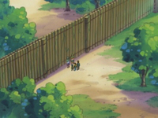
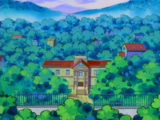
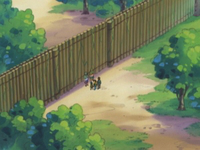
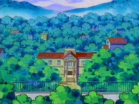
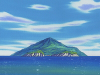
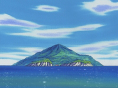

Pagina de turismo de la region de Hoenn
Bienvenido a Hoenn, una región donde la naturaleza y la aventura se entrelazan en perfecta armonía. Inspirada en la isla japonesa de Kyūshū, Hoenn ofrece un paisaje diverso que combina frondosos bosques, imponentes montañas, extensas rutas marítimas y playas de aguas cristalinas. Aquí, el mar es tan protagonista como la tierra: gran parte del territorio está compuesto por rutas oceánicas que invitan a explorar islas exóticas y secretos escondidos bajo las olas.
 



 
